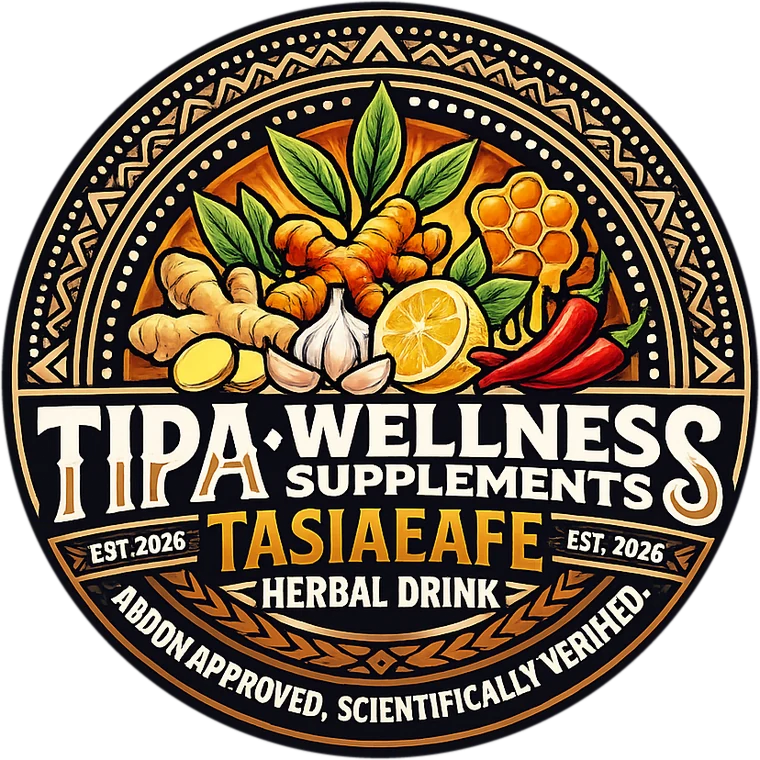

Turmeric
The golden root at the heart of every batch — it gives Tasiaeafe its color.
Tālofa · Tasiaeafe Herbal Drink
Tasiaeafe is a turmeric herbal drink brewed by the gallon the traditional way in Petesa Tai, Pago Pago — nine ingredients, simmered in small batches, bottled fresh, and stamped by hand.
Inspected, passed & permitted American Samoa Government Department of Health
Contents tested, verified safe Scientific Research Organisation of Samoa (SROS)
FRESH BATCHES WEEKLY · PICKUP & ISLAND DELIVERY

What's inside
Everything in Tasiaeafe is on the label, and everything on the label is in your kitchen's language — and ours.
The golden root at the heart of every batch — it gives Tasiaeafe its color.
Fresh island heat that wakes the whole blend up.
The strong stuff — mellowed by a slow simmer.
Warm spice, steeped until it rounds out the roots.
A clean burn that lingers just long enough.
A golden spoonful to carry the spices.
Island sweetness — no sugar, no syrup.
Cut fresh and squeezed bright, jug by jug.
Filtered and boiled — nothing untreated goes in.
How it's made
No factory line and no warehouse — when a batch runs out, we brew the next one.
STEP 01
Turmeric, ginger and the other roots and spices simmer together in small pots — never more than a few gallons at once.
STEP 02
The finished brew is poured into gallon jugs, sealed, and moved straight into the chiller.
STEP 03
Every jug gets its batch date and best-by written by hand before it leaves the house in Petesa Tai.
EVERY JUG TRACEABLE TO ITS BATCH — THAT'S THE WHOLE SYSTEM
On the record
American Samoa's natural wellness drink holds an official health permit — and a lab report to go with it.
American Samoa Gov't
The Department of Health inspected Tasiaeafe and the way we brew it, passed it, and issued the permit every batch is made and sold under.
SROS · Scientific Research Organisation of Samoa
SROS tested what goes into every gallon — herbs included — and verified it safe and good for consumption.
GOOD FOR THE BODY · TAKEN CONSISTENTLY — WELLNESS IS A HABIT, NOT A DOSE
Order
Fresh batches go fast. Call or message us and we'll set one aside — pickup in Petesa Tai, or delivery across the island.
(684) 731-9911or 731-9912 · we answer any time, any day